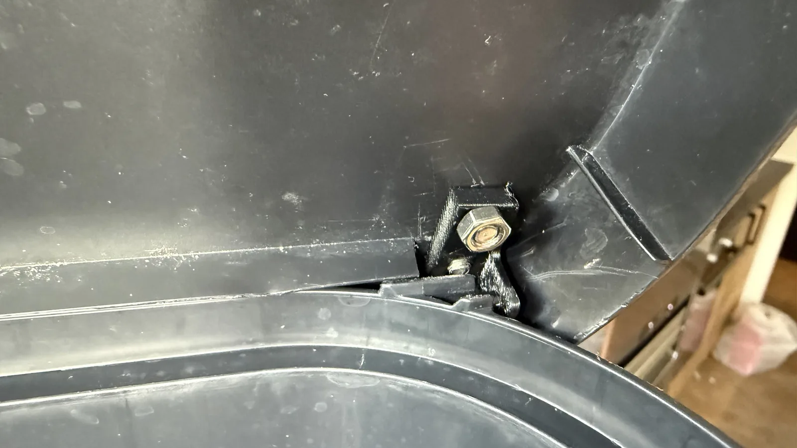
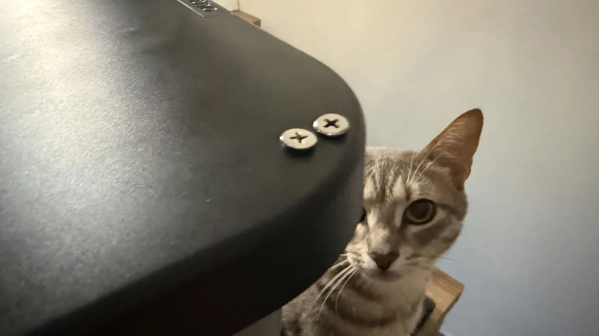

← all notes
23.08.2026#diy #3d-printing
A trash note.
Not every complex project is worth posting about. I'd been suffering with a broken trash bin lid for ages. The whole lid rested on a millimeter of plastic in a couple of spots when it opened. At some point the mounts broke. The neighborhood raccoon started climbing in occasionally.
Quickly measured it up and printed a couple of inserts. Bodged it together with M5 bolts. Should hold for another year.
Not every complex project is worth posting about. I'd been suffering with a broken trash bin lid for ages. The whole lid rested on a millimeter of plastic in a couple of spots when it opened. At some point the mounts broke. The neighborhood raccoon started climbing in occasionally.

Quickly measured it up and printed a couple of inserts. Bodged it together with M5 bolts. Should hold for another year.

Comments